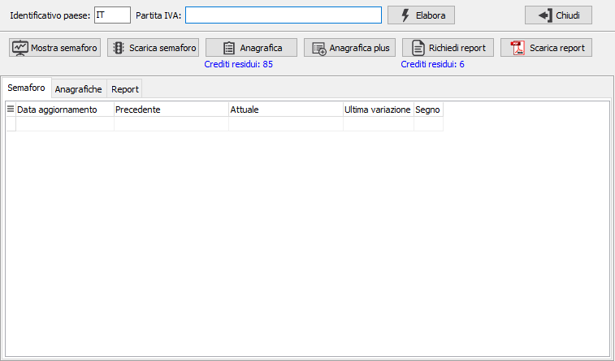
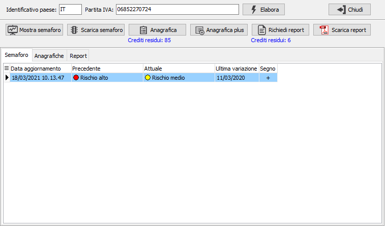
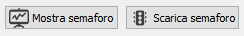
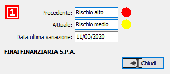
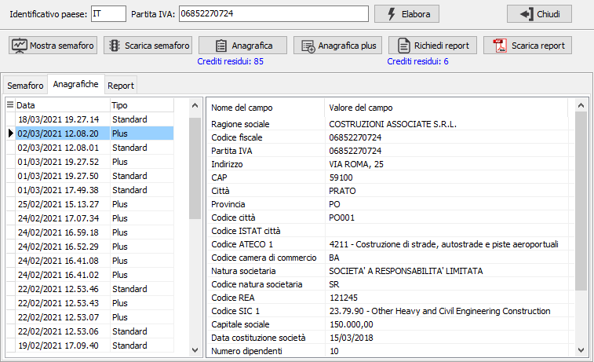
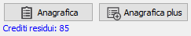
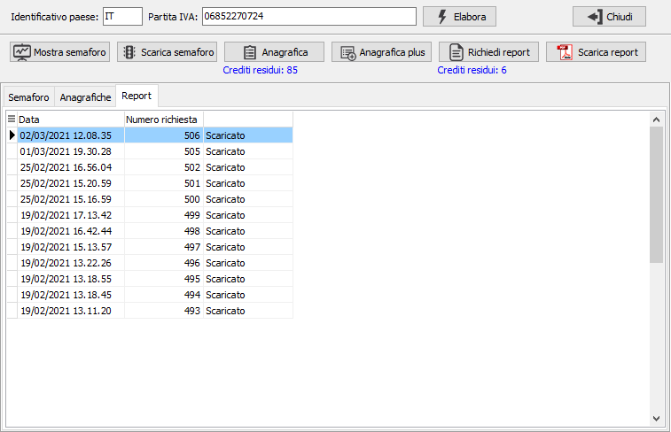
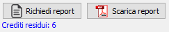

Analisi per partita Iva
La procedura consente di analizzare una partita Iva, sia appartenente ad un cliente/fornitore di OS1, che non appartenente a nessuna anagrafica; dopo aver inserito la partita Iva premendo il pulsante Elabora vengono impostate nelle pagine le informazioni relative derivanti dalle tabelle presenti sul database aziendale. In base alla configurazione dell'utente collegato potranno essere visualizzate tutte le pagine o solo quelle per cui l'utente ha abilitato la visualizzazione, la stessa cosa per l'abilitazione dei pulsanti di aggiornamento che saranno disabilitati se l'utente non ha la facoltà di richiedere certi aggiornamenti.

La pagina relativa ai semafori mostra il dato presente riportando la data di aggiornamento, il valore precedente ed attuale e le informazioni, data e segno, relative all'ultima variazione.



I pulsanti consentono di visualizzare il semaforo aggiornato e scaricare l'eventuale aggiornamento presente. Il pulsante "Mostra semaforo" attiva la finestra mostrata a lato, che indica se sono presenti variazioni le informazioni relative ai valori precedente ed attuale, la data dell'ultima variazione e la ragione sociale; se non sono presenti variazioni viene mostrato solo il valore del semaforo attuale.
La pagina relativa alle anagrafiche riporta sulla sinistra una griglia che contiene tutti gli aggiornamenti che sono stati scaricati con la data, l'ora ed il tipo di anagrafica aggiornata; spostandosi su questa griglia, sulla destra vengono mostrati i dati contenuti nell'aggiornamento. Se l'analisi è stata richiamata da un'anagrafica che è in stato di inserimento/variazione sarà presente un pulsante per aggiornare con i dati mostrati i campi dell'anagrafica, senza effettuarne il salvataggio.


I pulsanti consentono di scaricare l'eventuale aggiornamento delle anagrafiche; viene mostrato anche il credito residuo, che potrà essere utilizzato per gli aggiornamenti; alla pressione di uno dei pulsanti sarà richiesta una conferma che indica anche il costo dell'aggiornamento.
La pagina relativa ai report riporta tutti i report che sono stati richiesti, la data e se sono stati scaricati oppure se ancora devono essere scaricati.


I pulsanti consentono di richiedere un nuovo report e di scaricare eventuali report che ancora risultano da scaricare; viene mostrato anche il credito residuo, che potrà essere utilizzato per richiedere nuovi report; alla pressione del pulsante di richiesta sarà visualizzata una conferma che indica anche il costo del report; nel caso di conferma viene visualizzata nella griglia la nuova richiesta con il proprio numero e lo stato da scaricare; appena il report sarà disponibile, premendo il pulsante Scarica report sarà scaricato, se presenti più richieste da scaricare ed i report fossero tutti disponibili il pulsante Scarica report scaricherà tutti i report disponibili. Nella griglia se si fa doppio clic su di un report scaricato, verrà aperto il report corrispondente.